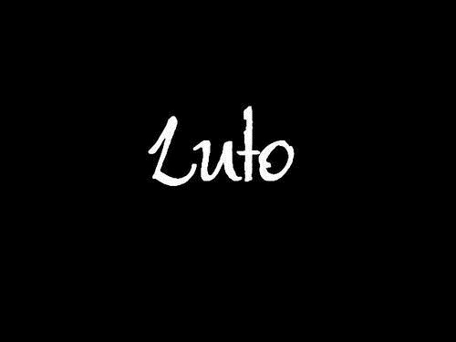

Rua antalya 243, Nova Cidade-Manaus, AM-Brasil
Nascimento: 17 de dezembro de 2000
Telefone: +55 92 9436-2634
E-mail: maharahayden@gmail.com
Qualificações Acadêmicas
Ensino Médio
FMM-Fundação Matias Machline
Manaus, AM-Brasil
2017-Até o presente momento
Ensino Fundamental
Ceti-João dos Santos Braga
Manaus, AM-Brasil
2013-2016
Sesc
2008-2012
Histórico de Experiência Acadêmica
Monitora Acadêmica de Língua Portuguesa
FMM-Fundação Matias Machline
Matéria: Língua Portuguesa
Função: Auxiliar o professor em atividades em sala e tirar dúvidas do assunto para os alunos.
Junho/2017-Out/2017
Histórico de Experiência Profissional
Desenvolvedora de Sistemas Empresariais Descrição de Atividades:Levantamento de requisitos; Análise de requisitos; Projeto;
Implementação; Testes; Implantação.
Período:dezembro/2018-até o presente momento. Principais Clientes:
Qual foi o ato de coragem?
Carregar rapidamente e tirar um bebê do meio da rua quando um carro estava vindo em alta velocidade
Quando foi o Ato de Coragem?
Em meados de 2009.
Como foi o Ato de Coragem?
As crianças do bairro estavam brincando na rua. De repente veio um carro em alta velocidade na direção de um bebê. Eu rapidamente corri, peguei o bebê e trouxe para a calçada. Quais habilidades utilizou para realizar o Ato de Coragem?
Reflexo e agilidade foram as principais habilidades.
Maior Medo em Vida

Por que tem esse medo?
Porque a morte é algo irreparável, e eu n suportaria perder uma pessoa na qual eu amo e saber que em vida eu nunca mais vou vê-la.
Descreva o dia que teve mais sorte na vida
Foi em um passeio de barco com meus pais e seus amigos, em 2006. Nesse dia, houve uma tempestade daquelas e o barco ficou na eminência de afundar. Acordaram todo mundo e pediram pra colocarem boia, eu fiquei muito apavaroda na época. Não sei ao certo o que aconteceu, mas o barco não afundou e prosseguimos com o passeio tranquilamente.
Gosta de animal de estimação? Descreva-os, referencie suas raças em sites da Web.
Sim, possuo 1 gato chamado: Pacu (Persa). Ele é extremamente dorminhoco e comilão, é muito carinhoso (quando quer), é bagunceiro e adora brincar com uma bolinha que tem aqui em casa.
Qual o seu time de coração? Quando começou a torcer para tal? Referencie o nome do seu time com o site oficial dele.
Em relação a FMM, por que escolheu o curso de Informática?
Escolhi o curso de informática porque sempre tive interesse nessa área tecnológica, e também porque já sairei da FMM com uma qualificação técnica que me proporcionará emprego antes mesmo da minha formação superior. A área de informática só tende a crescer mais a cada ano que passa, ou seja, é uma ótima escolha para quem visa uma ótima carreira profissional.